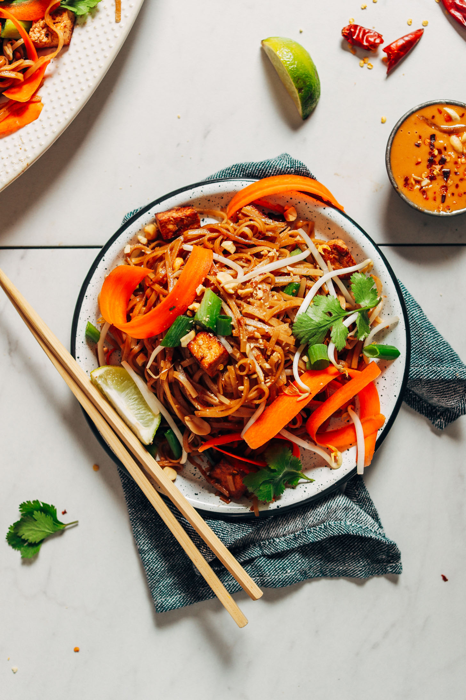

Easy Tofu Pad Thai

Easy pad thai recipe from Minimalist Baker!
Ingredients
Sauce
- 3 Tbsp lime juice
- 1/3 cup soy sauce
- 3.5 Tbsp Maple Syrup
- 1.5 tsp chili garlic sauce
- 1-2 tsp Vegetarian Fish Sauce
Stir Fry
- 1 Tbsp sesame oil
- 1 cup cubed extra firm tofu
- 2 .5 tsp chili flakes
- 2 cloves of garlic minced
- 1 Tbsp soysauce
- 1 cup bean sprouts
- 1 cup chopped green onions
- 1/3 cup chopped roasted salted peanuts
Noodles
- 8 oz Pad Thai rice noodles
Instructions
- In a small saucepan, add lime juice, soy sauce, maple syrup, chili garlic sauce, and vegetarian fish sauce and heat over medium heat until just simmering. Cook for 30 seconds, stirring occasionally, then turn off heat and set aside.
- Add noodles to a large bowl and cover with just boiling water. Stir and cover and cook according to package instructions
- Drain noodles and toss with a little sesame oil.
- Heat skillet over medium heat. Once hot, add oil and tofu and saute for about 4 minutes turning occasionally so it browns on all sides. Add red pepper flakes, garlic, and soy sauce. Toss gently to combine until garlic is just slightly browned.
- Add noodles, sauce, bean sprouts, green onions, and peanuts and cook over medium-high heat, tossing occasionaly for about 2-3 minutes or until the sauce has coated everything and the dish is hot.